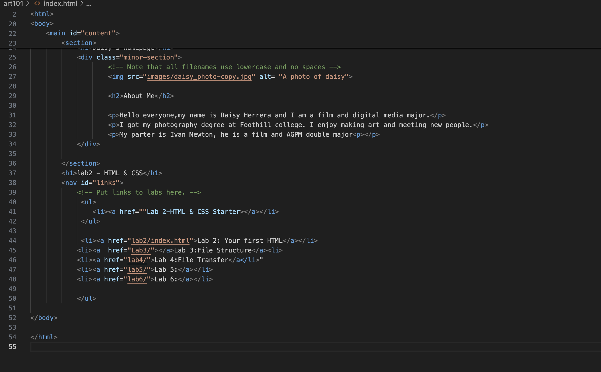

Lab 3 - File stuctures
This lab is to further create a local file structure on my computer and add index.html files.
Challenge
I was having trouble trying to figure out how to input images onto my pages. I kept trying input the source of where my photos where located and kept getting a missing message.
Problems
I have figured how to sucessfully locate my photos. My orginal photo wasn't working when it was jpg. Yet when I changed it to png, I was able to see my photo.
Reflection
Overall, I was able to troubleshoot and figure out the problem. The class notes and canvas assignment guide has been a great help. I use them as a guide to see what I have missed or have done wrong.
Results
I have included my index.html file I created:
